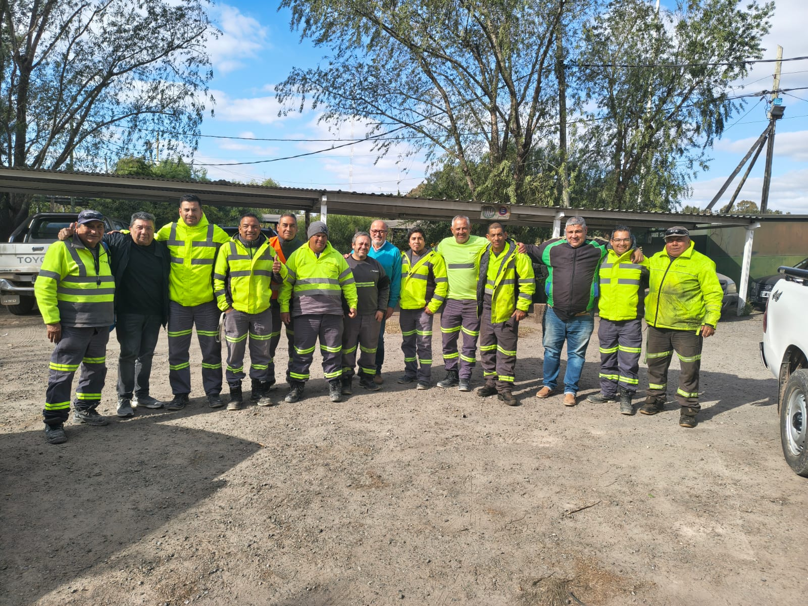
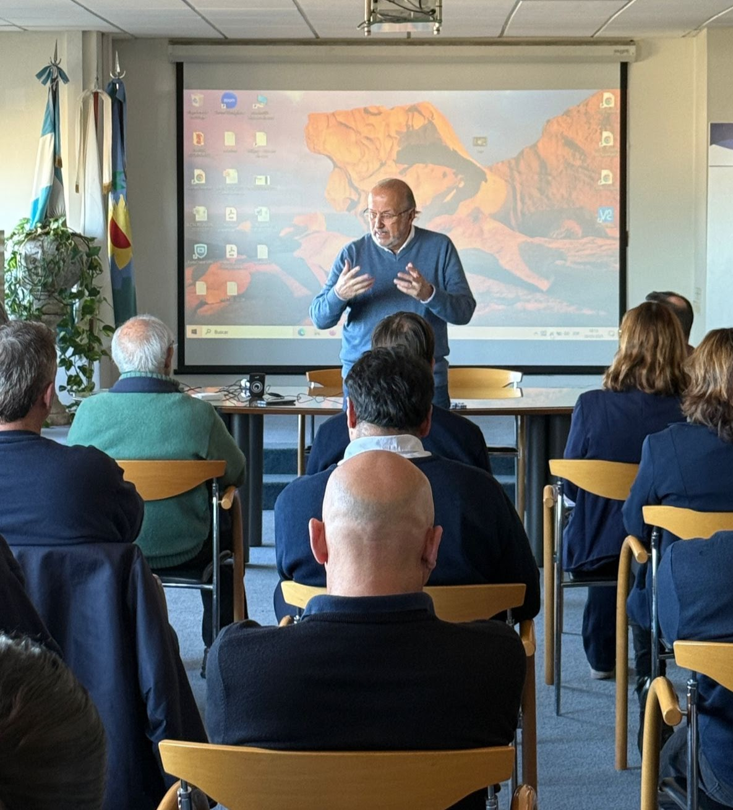
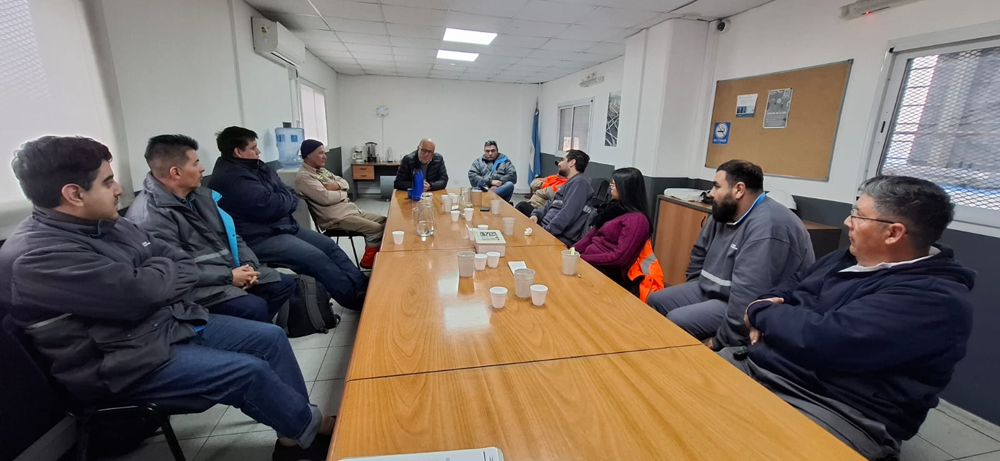

Nueva web
Guillermo
Nuesch
Salud mental y prevención de consumos en el trabajo. Ahora con casa propia.
guillenuesch.netlify.app
Post — 1080 × 1350
Nueva web
Salud mental y prevención de consumos en el trabajo. Ahora con casa propia.
guillenuesch.netlify.app

25 años
Sindicatos, ART, plantas y Estado. El mismo oficio: abrir la conversación donde se trabaja de verdad.
guillenuesch.netlify.app

Qué vas a encontrar
guillenuesch.netlify.app
Cómo trabajo
guillenuesch.netlify.app

Si tu equipo lo necesita
Lo peor que podemos hacer, es no hacer nada.
Guillermo Nuesch
Entrá a la web →
guillenuesch.netlify.app
Historia — 1080 × 1920
Nueva web
Guillermo Nuesch. Salud mental en el trabajo.
guillenuesch.netlify.app
Marca personal
Plantas, sindicatos, ART y Estado. No es wellness de oficina.
guillenuesch.netlify.app
Adentro
guillenuesch.netlify.app
Link en la bio
Charlas, talleres y programas a medida.
guillenuesch.netlify.app